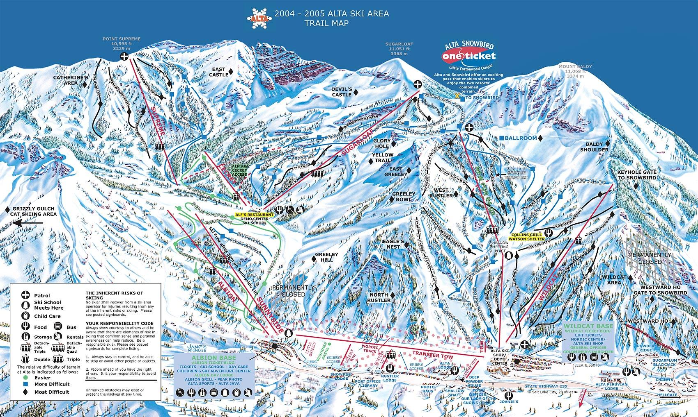

There are plenty of amazing places to ski in Utah, but none come close to the resorts in Little Cottonwood Canyon. Alta and Snowbird are two of the best places to ski in the entire world.
The following is my personal ranking and anlysis of a few of the ski lifts at each of the two ski resorts in Little Cottonwood Canyon, Alta and Snowbird.
ALTA
- Collins
- Collins gives you direct access to the High T, an iconic segment of Alta. The High T can be intimidating, because skiiers typically go really fast across it and will yell at you if you are in their way!
- Collins has the transfer station. This unique feature allows the lift to change directions.
- The terrain off of Collins is steep and fun. You can ski it fast and hard. Anybody can find something that they enjoy off of this lift!
- Wildcat
- Wildcat lift is a classic two seater. Anybody who is riding on Wildcat is either old and loves the classic vibe of the lift, or an absolute Satch Lord who is looking to throw down on the legendary Punk Rock.
- Wildcat gives you access to Keyhole, a glorious run that is known for providing fluffy pow turns to those who seek them.
- My friends and I ski Wildcat quite a bit, and we quite enjoy our time there.
- Supreme
- Supreme offers breathtaking views of the surrounding Wasatch Mountains which creates a phenomenal background for any pictures or clips you are looking to snag.
- There are some gnarly and steep runs right under the lift. The terrain makes skiing Supreme a blast.
- Compared to other lifts, Supreme typically has a shorter wait time due to smaller lift lines. This gives you more time to ski and have a good time.
SNOWBIRD
- Aerial Tram
- The tram gives you the easiest access to the Upper Cirque, which is by far the most legendary part of Snowbird. The Cirque is known for iconic lines such as Great Scott, Hanging Bowl, Forbidden Zone, and more.
- The tram offers a brief refuge from the weather on cold days when you need a moment to warm up, but don't want to stop skiing. The ride up is a great opportunity to get out of the wind and snow.
- The red and blue tram cars are well known symbols of Snowbird.
- Peruvian
- Peruvian gives lower elevation access to the same area of Snowbird as the tram. Although you can't make the Upper Cirque from Peruvian, you can still ride lower Baldy and Black Jack.
- True locals call this lift P-Dog. Anybody who is anybody knows that at the top of the lift, you will see the awe-inspiring Dick-Bass Tunnel straight through the mountain.
- Everybody loves a good P-Dog lap with the homies, especially if the tram line is long.
- Little Cloud
- Little Cloud provides quick access to some pretty sweet powder runs if you can get to them before the crowds.
- Little Cloud is another lift that provides backside access to the Upper Cirque.
- The iconic wave jump is located off of Road to Provo, a run that sits right next to Little Cloud. All that can be said about that jump is that it has seen some unbelievable carnage.
Unfortunately, climate change is threatening our winters. Do your part to keep Little Cottonwood Canyon the best place to ski!